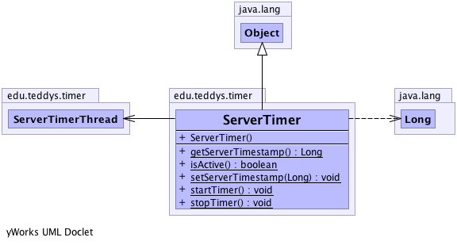

edu.teddys.timer
Class ServerTimer
java.lang.Object
 edu.teddys.timer.ServerTimer
edu.teddys.timer.ServerTimer
public class ServerTimer
- extends java.lang.Object
The ServerTimer does the whole logic of a game with registered players.
For example,
- process user input
- trigger events
- check game rules
- update all object states
(According to https://developer.valvesoftware.com/wiki/Source_Multiplayer_Networking )
-
-

| Methods inherited from class java.lang.Object |
clone, equals, finalize, getClass, hashCode, notify, notifyAll, toString, wait, wait, wait |
ServerTimer
public ServerTimer()
startTimer
public static void startTimer()
- Start the server timer.
stopTimer
public static void stopTimer()
isActive
public static boolean isActive()
getServerTimestamp
public static java.lang.Long getServerTimestamp()
setServerTimestamp
public static void setServerTimestamp(java.lang.Long ts)